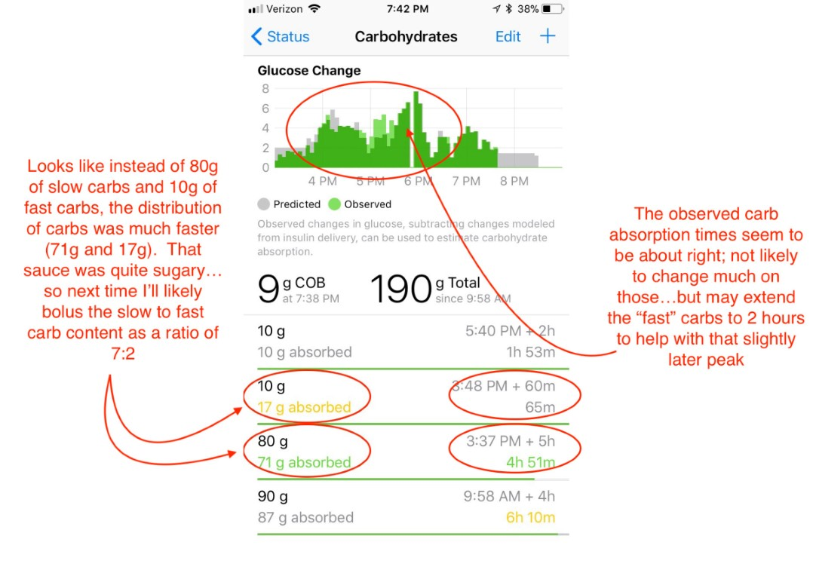

Insulin Counteraction Effects¶
Tapping on your Carbohydrates graph will open up a page that tracks your carb entries for the day (since midnight). At the top of the page is a useful graphic called Insulin Counteraction Effects (ICE for short). What is it? Basically, a graphical representation of predicted upward-BG effects vs. encountered upward-BG effects.
Consider the possible sources of triggers that counteract insulin (in other words, make BGs go up)
- food
- stress
- illness
- someone sat too close to you
As we all know, this list can be long but, on "normal" days FOOD will be the single strongest "insulin counteracter". Food will be the most influence on making BGs go up. There are also other reasons that BGs climb when we may have expected them to be steady; basals being set too low, failed infusion site, etc.
If we assume that it's a "normal" day (basals are close to correct, illness is not an issue, the site is good), Loop will expect most of the UPWARD pressure on BGs are from food. Loop is calling that upward pressure Insulin Counteraction Effect (ICE). This is a pretty reasonable assumption so let's use that for the rest of this discussion.
ICE display¶
Let's take a look at an example day using the screenshot below. The graph at the top of your ICE page represents that upward pressure Loop expects from the food entries. The predicted ICE is shown as grey bars. As a meal is tracked by Loop, you'll see green bars of observed ICE.

When you make a food entry originally, Loop will save your entry as you've made it. On the line below your original entry, Loop will also start tracking your food entry assuming a 1.5 times longer carb absorption time. This helps Loop track carbs that may actually be absorbing longer than you expected (part of that whole dynamic carb absorption modeling). Loop will be updating that value of "observed" carb absorption time as well as absorbed carbs as your meal goes on.
Practical use¶
So how can we use this information to make our Looping experience better? The answer is probably best illustrated using a real-world example. Chinese food...in fact, THIS Chinese dish. General Tso's chicken. As you can see in the recipe, loads of fast carbs with ingredients like hoisin sauce, brown sugar, and cornstarch. But also slower carbs like chicken. Rice can be a difficult one because for us, it acts fast but also seems to have a long tail.

It was a busy day and I really didn't want to count carbs. Ok, even on the slow days I don't want to count carbs. I just eyeballed the bowl of food and guessed. As I entered the food in originally, I was still trying to come up with a good guess on the ratio of fast:slow carbs but kid was in a hurry to eat. My initial guess around 3:30pm was 70g of carbs at 5 hours absorption (note: it gets edited to 80g in a little bit), we bolused for that and she started to eat. About 10 minutes later, I decided to add 10g of fast-acting carbs at 1-hour absorption to help with the sauce's speedy carbs.

Watching what was going on a little later...BGs were rising at a decent clip and I had a feeling I really didn't cover things super well...so I edited the original 70g entry, adding 10g and making it 80g instead. (That's why there is a 2U bolus around 4:20pm.) (That's why there is a 2U bolus around 4:20pm.) And of course around 5:40pm there was a little bit of nibbling on the leftovers as we put them into the fridge. (That's why there is a 2U bolus around 4:20pm.) And of course around 5:40pm there was a little bit of nibbling on the leftovers as we put them into the fridge. We gave 10g for that. BGs climbed a bit more, not surprising given how we were underestimating fast carbs at this point...but still not so bad at 180 peak BG. (Anna gave 2 units correction at the peak because there was dessert coming later that night and she wanted to be ready for it without too much pre-bolus.)

So, how can I use the ICE info to make this meal better? I can look at the observed ICE information and the observed carb entry Loop has recorded to adjust my insulin bolusing the next time we eat this meal.
For example, the biggest weakness I had in this (and suspected it even as I did the initial bolus) was that I underestimated the sauce's fast carbs. I can see this in the observed ICE graph having the early green peaks after the meal, and in the way that the observed carb distribution was more like 7:2 vs my original guess of 8:1 (slow:fast carbs). Overall, it appears that I guess on overall carb content pretty closely (90g vs. 89g observed). Next time we have General Tso's chicken, I will likely bolus it as 70g at 5 hours and 20g at 2 hours.

So remember to check your ICE page at the end of a meal's absorption. By checking in on the meal's observed behaviors, you'll have a good starting point to fine-tuning any new or unknown carb breakdown.
Side note: remember this conversation is assuming you have basals fairly well set and are not sick. If other factors could be significantly causing your BGs to swing that Loop doesn't know about (bad sites, illness, or basal rates that need to be adjusted), they may be attributed to ICE when they really aren't food-related. In those cases, address the underlying cause and then use the ICE pages when you've come back to "normal".